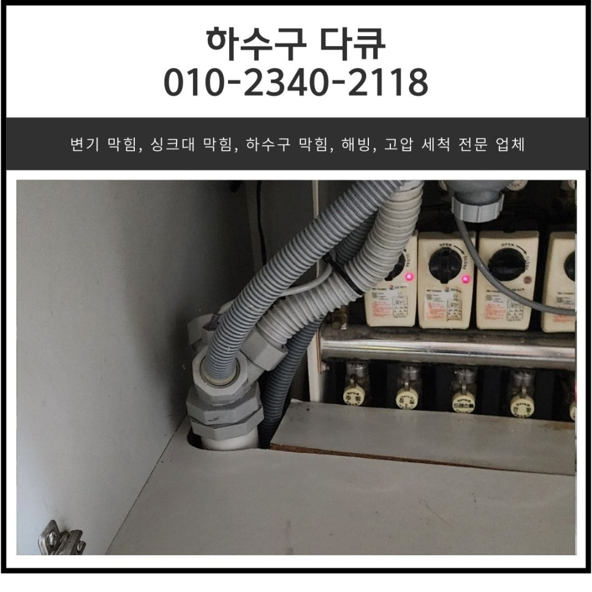
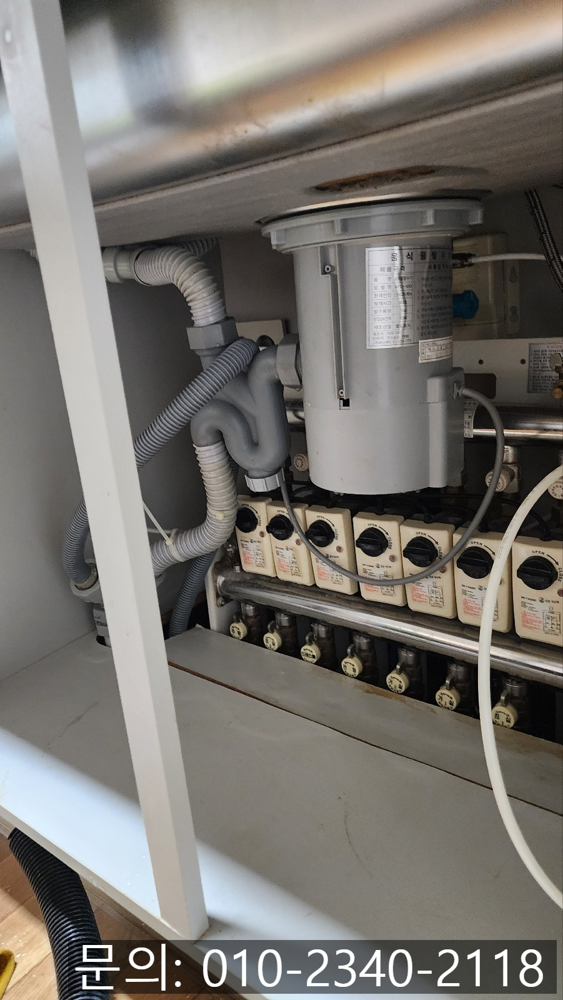
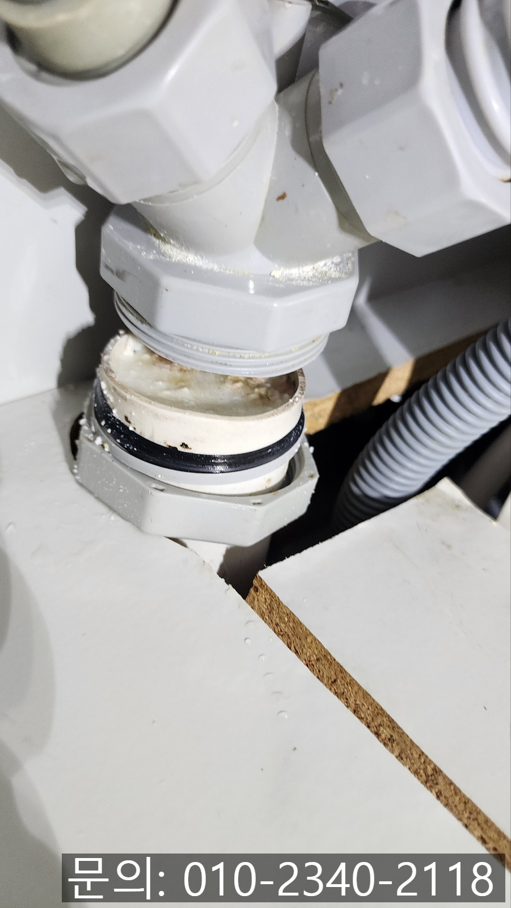
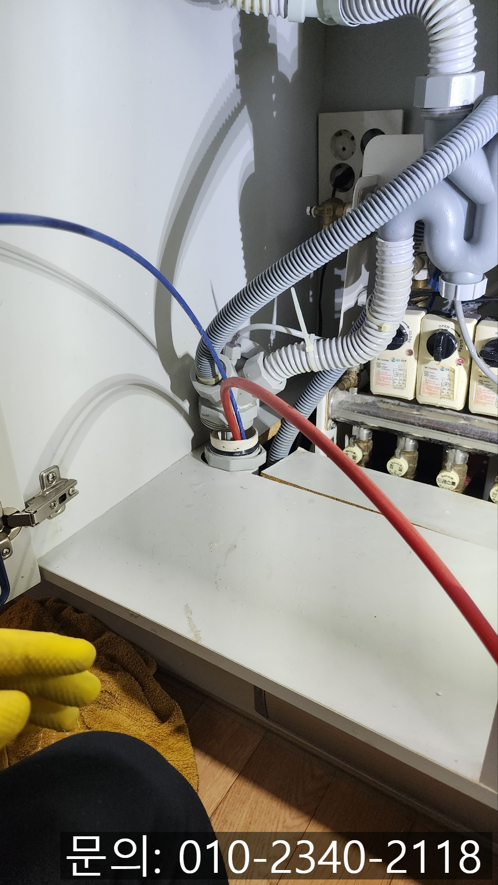
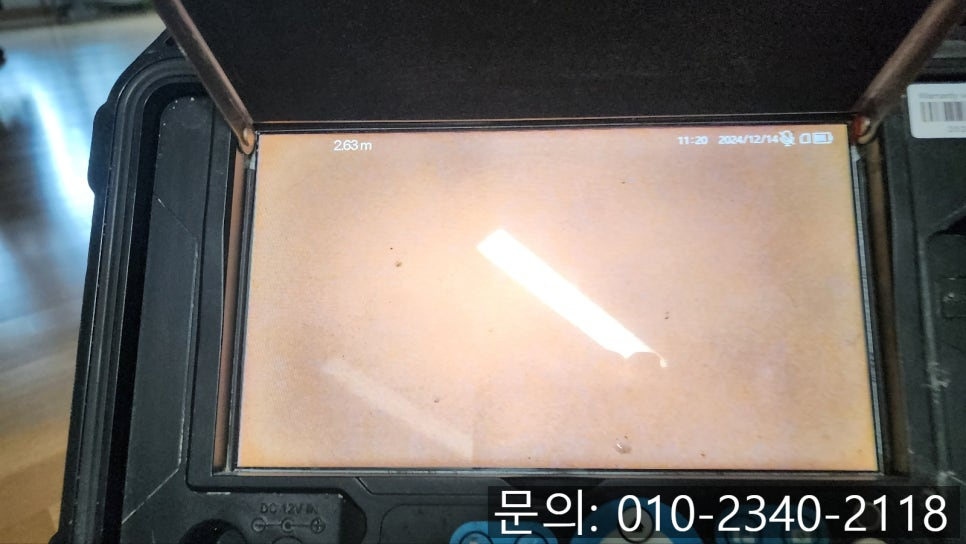
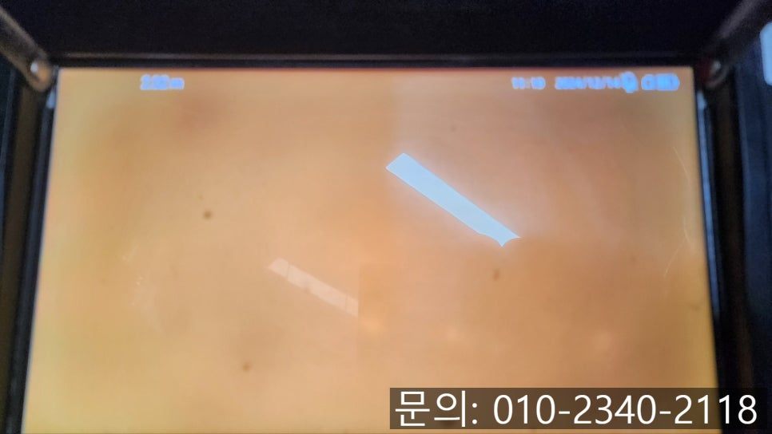
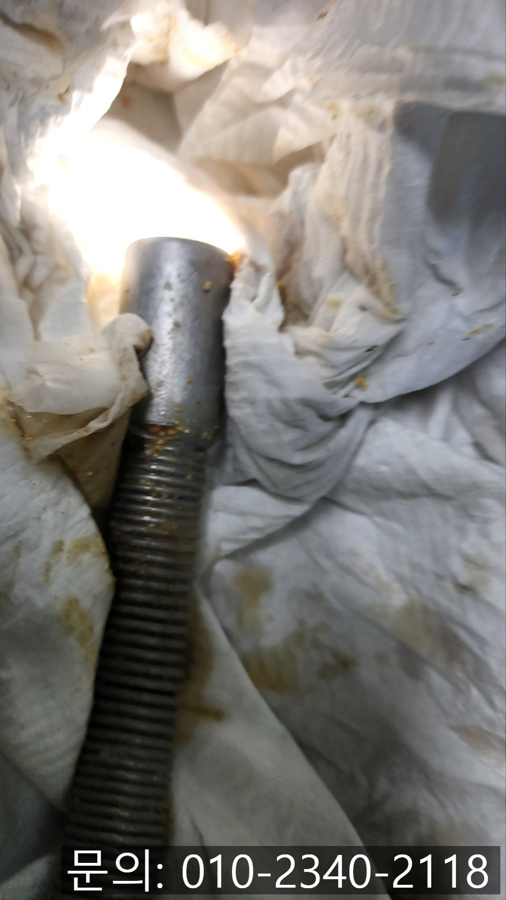

🏠 서신면 싱크대 막힘 화성 양감면 하수구 역류 뚫는 방법
화성 양감 싱크대막힘 전문 시공 후기

📋 작업 개요
- 위치: 화성 양감, 양감, 화성
- 서비스 유형: 싱크대막힘, 하수구막힘, 배관막힘, 역류해결, 뚫는업체
- 작업 일시: 2024. 12. 18. 21:46
- 업체명: 하수구수사대 (010-5615-2118)
🔍 문제 상황
안녕하세요.
서신면 싱크대 막힘, 화성 양감면 하수구 뚫는 업체 하수구 다큐입니다.
서신면 싱크대 막힘은 하루아침에 갑자기 발생하는 일은 아닙니다.
주방의 싱크대를 사용하면서 조금씩 흘러들어간 이물질이 오랜 시간 배관에 쌓이면서 조금씩 막히게 되는데요.
배관이 점차 좁아지면서 분명하게 신호를 보내지만 대부분의 고객님들은 잘 알아차리지 못하는 경우가 많습니다.
서신면 싱크대가 막히고 있다는 신호를 어떻게 알아차릴 수 있을까요?
가장 손쉽게 서신면 싱크대 막힘을 알아챌 수 있는 방법은 배수 속도입니다.
싱크대에서 사용한 물이 배관을 통해 흘러가는 속도가 빠르다면 문제가 없겠지만 배관에 이물질이 많이 쌓여있을 경우 물이 흘러가는 속도가 점점 느려질 거예요.

🔎 원인 분석
💡 전문가 진단: 서신면 싱크대 막힘
그다음으로는 싱크대 주변에서 발생하는 악취입니다.
아무래도 배관에 오랜 시간 쌓인 이물질이 물과 만나면서 썩어가다 보면 배관을 타고 악취가 올라올 수밖에 없어요.
그뿐 아니라 싱크대에서 평소에 듣지 못하는 소리가 나는 경우, 사용한 물이 흘러내려갈 때 이상한 소리가 난다면 하수구 전문가를 통해 점검을 받아보시는 것도 좋습니다.
서신면 싱크대 막힘
오늘 소개해 드릴 화성 양감면 하수구 역류 뚫는 현장의 경우 평소와 다르게 주방을 사용하면 물이 천천히 빠지고, 쿰쿰한 냄새도 나는 것 같아 지인의 소개를 받고 하수구 다큐로 연락을 주셨어요.
싱크대를 사용하고 물이 천천히 빠지게 되면 얼마나 불편한지 누구보다 잘 알고 있는 하수구 다큐는 고객님의 연락을 받고 신속하게 방문해 드렸어요.
현장에 방문해 배관 내부를 막고 있는 이물질을 확인하기 위해 연결된 배관을 분리해 보니, 이물질로 가득 차 있는 상태였어요.
이 정도라면 역류했을 텐데 주변은 깨끗해서 고객님께 여쭤보니, 주방을 자주 사용하지는 않는다고 하셨어요.

🔧 작업 과정
주방을 가끔 사용하게 되면 화성 양감면 하수구 역류도 안 일어나야 하는 거 아닌가? 하고 생각하실 텐데요.
싱크대를 가끔 사용해도 물과 함께 흘러들어간 이물질이 배관에 쌓여있고, 추운 날씨에 배관에서 굳어버리기도 합니다.
주방에서 물을 자주 사용해야 물에 밀려 내려가기라도 할 텐데, 자주 사용 안 하시다 보니 더 단단하게 잘 굳어있겠죠?
내시경 카메라를 진입시키자마자 기름 슬러지로 가득 차 아무것도 보이지 않을 정도로 심각한 상태였습니다.
잠깐 배관 내부에 들어갔다 나온 내시경 카메라가 각종 이물질과 기름 슬러지가 잔뜩 묻어 나올 정도였어요.
고객님께 내시경 카메라로 촬영한 배관의 모습을 보여드리면서 화성 양감면 하수구 역류 뚫는 방법에 대해 설명해 드렸어요.
화성 양감면 하수구 역류 뚫는 방법은 다양한데요.
워낙 이물질의 양이 많다 보니 플렉스 샤프트 장비와 석션을 사용해 모두 제거하기로 했습니다.
플렉스 샤프트 장비는 노즐 끝에 달려있는 체인이 배관 내부에서 강하고 빠르게 회전하면서 이물질을 타격해 잘게 부숴주거나, 배관 벽면에서 떨어트려주는 작업을 하게 됩니다.
배관에서 떨어져 나온 이물질을 그대로 흘려보낼 경우 더 깊은 곳에서 다시 막힘이 발생할 수 있기 때문에 석션을 사용해 빨아드려 완벽하게 제거하는 작업을 진행해 드렸어요.
좁은 배관이지만 한 번의 작업으로 모든 이물질을 제거하는 건 불가능하다 보니 모든 이물질이 제거될 때까지 반복해서 작업을 진행해 드렸습니다.
이물질이 가득 차 아무것도 보이지 않던 배관이 마치 새것처럼 깨끗해진 게 보이시죠?


✅ 작업 완료
이렇게 많은 이물질을 제거해낼 수 있었습니다.
옆에서 지켜보시던 고객님도 이렇게 많은 이물질이 배관에 쌓여있을 줄 상상도 못하셨다며 놀라셨어요.
싱크대에서 많은 양의 물을 흘려보내도 막힘없이 시원하게 흘러가는 것을 고객님과 함께 확인하고 작업을 마무리할 수 있었습니다.
경기도 화성시 노작로 147 601-B234호




⚠️ 주방 싱크대 배관 막힘 예방 수칙
- ✅ 기름기가 묻은 식기나 프라이팬은 설거지 전 키친타올로 반드시 기름때를 닦아내세요.
- ✅ 주기적으로 싱크대 개수대에 뜨거운 물을 가득 받아 한 번에 내려 배관 내부 기름을 씻어내세요.
- ✅ 배수구 거름망을 미세한 필터로 사용하시고 음식물 찌꺼기가 틈으로 새어 들지 않게 관리하세요.
- ✅ 베이킹소다와 식초를 뜨거운 물과 함께 일주일에 한 번씩 부어주면 배관 살균과 막힘 예방에 좋습니다.
💡 핵심 정리
- 확실한 장비 작업(내시경 점검 및 샤프트 스케일링)으로 원인을 뿌리 뽑습니다.
- 작업 후 1년 이내에 동일한 부위 재발 시 100% 무상 A/S 서비스를 보장합니다.
- 서울 · 경기 · 인천 전 지역에 24시간 언제든 긴급 출동할 수 있도록 항시 대기 중입니다.
❓ 자주 묻는 질문 (FAQ)
🚨 화성 양감 싱크대막힘 문제로 고민이신가요?
정확한 원인 진단과 확실한 시공으로 재발 없는 해결을 약속드립니다.
24시간 긴급 출동 | 서울 · 경기 · 인천 전지역 | 1년 내 재발 시 무상 A/S